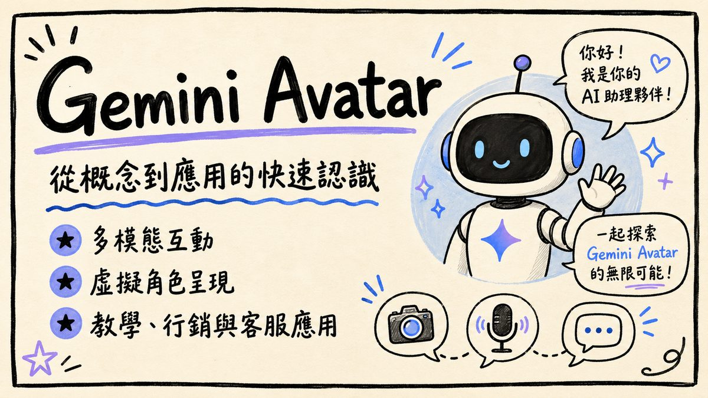
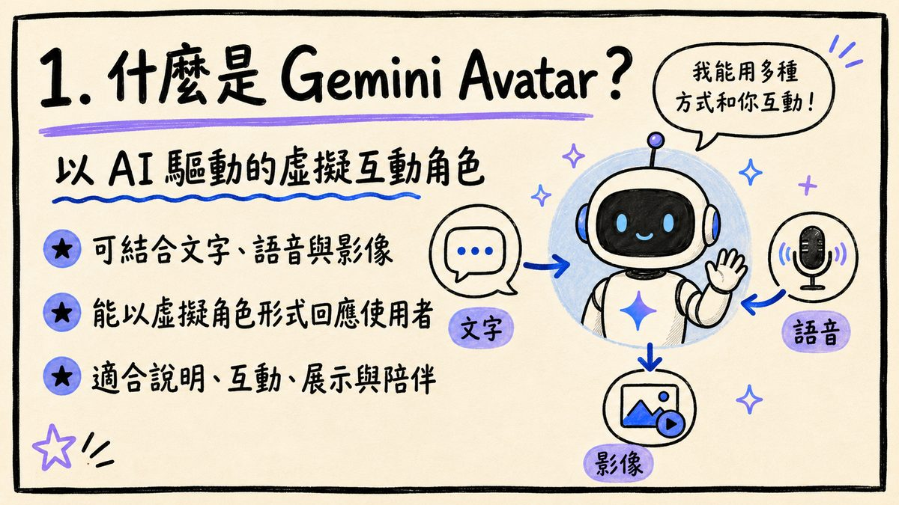
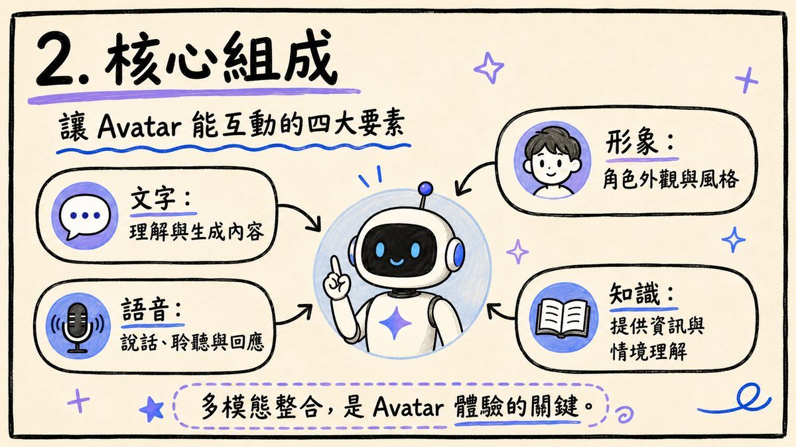
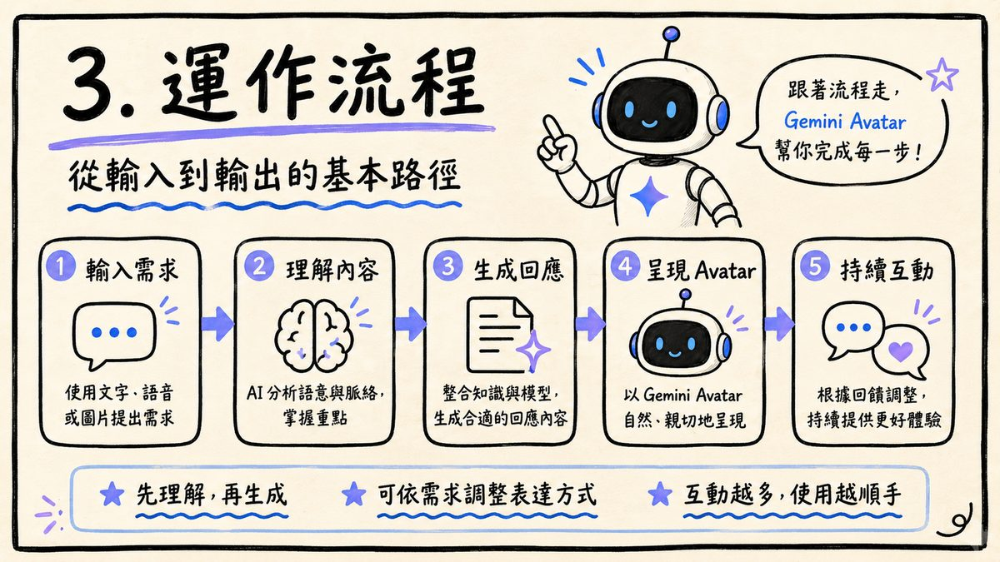
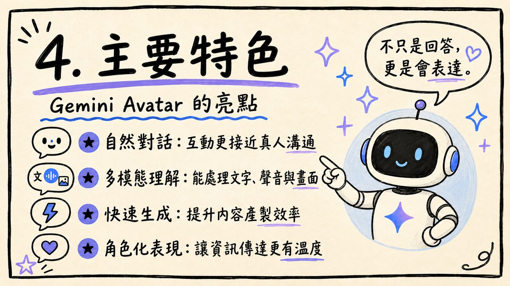
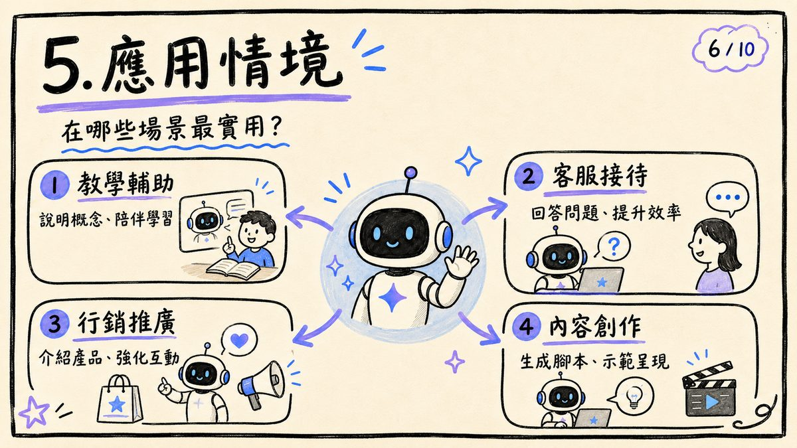
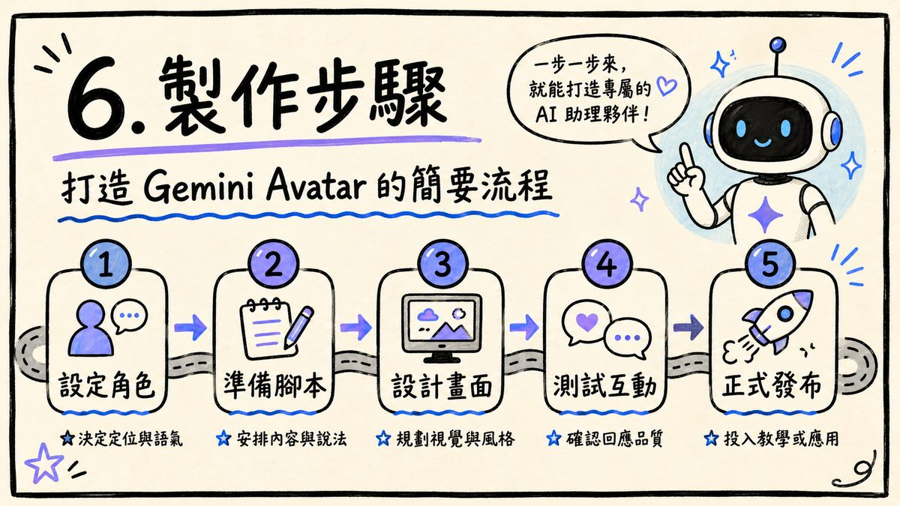
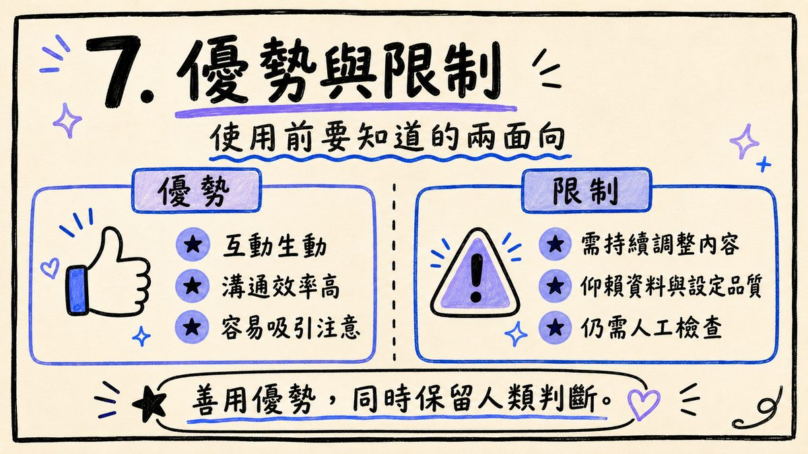
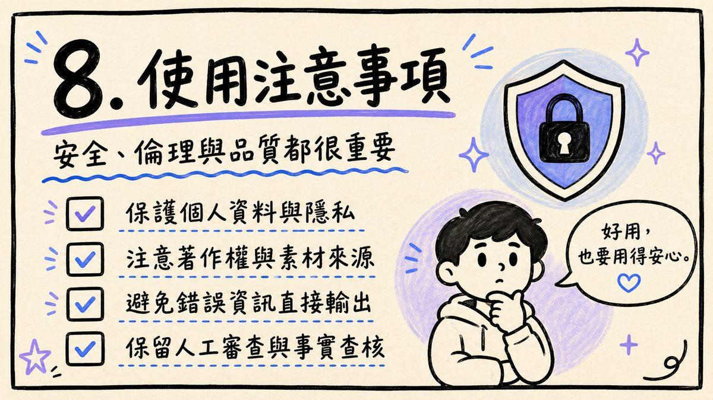
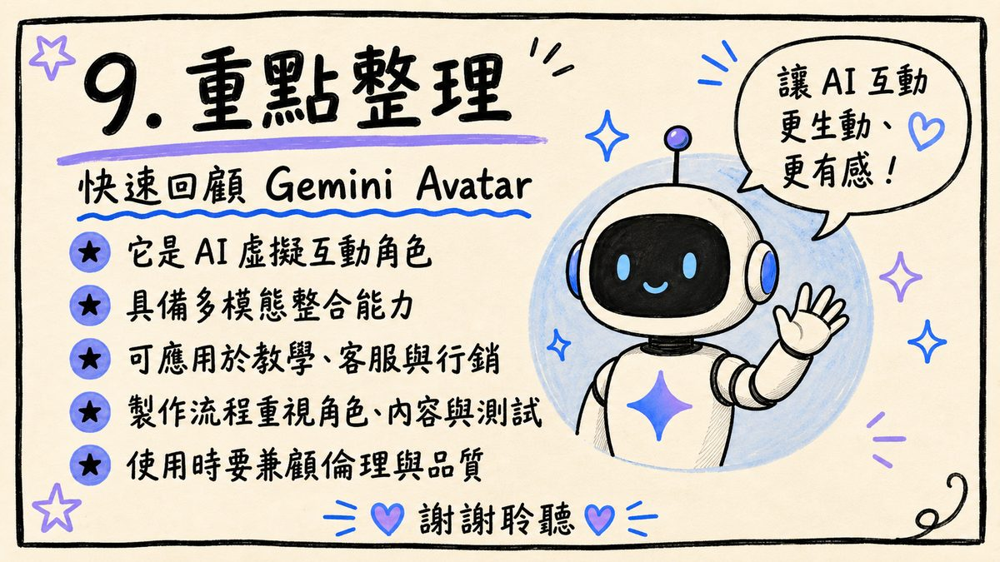

0. 課程資訊與教材
| 課程名稱 | EP38_「Avatar 虛擬人模型實作（虛擬人、虛擬分身與數字人差異實作）」，內容以 Gemini Avatar 為主軸 |
|---|---|
| 頻道 | 生成式 AI 應用電台・晨學講堂 |
| 直播日期 | 2026/05 晚間直播 |
| 教材 | 官方課程簡報 10 頁（手繪白板風） |
| 一句話先懂 | Gemini Avatar 是以 AI 驅動的虛擬互動角色：把「文字理解／語音／角色形象／知識」四件事整合成一個會表達的分身，用在教學、客服、行銷與內容創作。 |

💡 本集簡報為手繪風、圖像型投影片；本頁逐頁嵌入官方簡報原圖並把每頁重點整理成文字（真實課程內容，非推測）。示範操作的螢幕畫面與逐字稿時間碼，若日後取得錄影可再補入。
1. 什麼是 Gemini Avatar
一句話：以 AI 驅動的虛擬互動角色。（簡報 p2）

- 可結合文字、語音與影像——多種模態一起輸入輸出。
- 能以虛擬角色形式回應使用者——不只是文字回覆，而是一個有形象的分身在跟你互動。
- 適合說明、互動、展示與陪伴四類情境。
⚠️ 名詞區分（本集副標）：虛擬人 / 虛擬分身 / 數字人常被混用——共同點是「以 AI 生成、可互動的虛擬角色」；差別多在是否對應真實個人、擬真程度與應用場景。本集以 Gemini Avatar 為例貫穿說明。
2. 核心組成：四大要素
讓 Avatar 能互動的四件事。（簡報 p3）

| 要素 | 負責什麼 |
|---|---|
| 文字 | 理解與生成內容 |
| 語音 | 說話、聆聽與回應 |
| 形象 | 角色外觀與風格 |
| 知識 | 提供資訊與情境理解 |
「多模態整合，是 Avatar 體驗的關鍵。」
—— 簡報 p3 金句
3. 運作流程：從輸入到輸出五步

- 輸入需求：使用文字、語音或圖片提出需求。
- 理解內容：AI 分析語意與脈絡，掌握重點。
- 生成回應：整合知識與模型，生成合適的回應內容。
- 呈現 Avatar：以 Gemini Avatar 自然、親切地呈現。
- 持續互動：根據回饋調整，持續提供更好體驗。
💡 三個心法（簡報底部）：先理解、再生成；可依需求調整表達方式；互動越多、使用越順手。
4. 主要特色：Gemini Avatar 的亮點

- 自然對話：互動更接近真人溝通。
- 多模態理解：能處理文字、聲音與畫面。
- 快速生成：提升內容產製效率。
- 角色化表現：讓資訊傳達更有溫度。
「不只是回答，更是會表達。」
—— 簡報 p5 金句
5. 應用情境：哪些場景最實用

| 情境 | 用途 |
|---|---|
| 教學輔助 | 說明概念、陪伴學習 |
| 客服接待 | 回答問題、提升效率 |
| 行銷推廣 | 介紹產品、強化互動 |
| 內容創作 | 生成腳本、示範呈現 |
6. 製作步驟：打造 Gemini Avatar 五步

- 設定角色：決定定位與語氣。
- 準備腳本：安排內容與說法。
- 設計畫面：規劃視覺與風格。
- 測試互動：確認回應品質。
- 正式發布：投入教學或應用。
7. 優勢與限制：使用前要知道的兩面向

| 優勢 | 限制 |
|---|---|
| 互動生動 | 需持續調整內容 |
| 溝通效率高 | 仰賴資料與設定品質 |
| 容易吸引注意 | 仍需人工檢查 |
「善用優勢，同時保留人類判斷。」
—— 簡報 p8 金句
8. 使用注意事項：安全、倫理與品質

- 保護個人資料與隱私。
- 注意著作權與素材來源。
- 避免錯誤資訊直接輸出。
- 保留人工審查與事實查核。
「好用，也要用得安心。」
—— 簡報 p9 金句
9. 重點整理：快速回顧 Gemini Avatar

- 它是 AI 虛擬互動角色。
- 具備多模態整合能力。
- 可應用於教學、客服與行銷。
- 製作流程重視角色、內容與測試。
- 使用時要兼顧倫理與品質。
「讓 AI 互動更生動、更有感！」
—— 簡報收尾金句
10. 資料來源與製作說明
- 原始教材：EP38「Avatar 虛擬人模型實作（虛擬人、虛擬分身與數字人差異實作）」官方課程簡報 10 頁（手繪白板風）。
- 製作方式：本集簡報為圖像型投影片；下載原始 pptx → 取出 10 頁投影片原圖 → 逐頁親眼判讀並整理重點 → 原圖直接嵌入本頁。內容為真實課程內容。
- 誠實聲明：本頁以簡報實錄為準；本集資料夾未附獨立錄影，示範操作畫面與逐字稿時間碼暫缺，如日後取得錄影可再補入。Gemini／Avatar 相關功能會更新，實作以你當下的官方帳號與工具畫面為準。
- 介面參考：互動技能地圖頁沿用本站 EP44–46 的卡片式多層導覽與遊戲化進度設計。